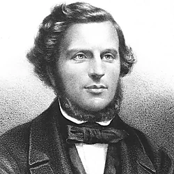

Andrew George Malcolm was a physician, medical historian, and public health reformer whose brief career made a notable contribution to mid-nineteenth-century Belfast during a period of rapid industrial expansion, recurrent epidemics, and growing sanitary pressures.
Born in Newry, Co. Down, Malcolm was educated at the Belfast Academical Institution, where he also began his medical studies before continuing his training at the University of Edinburgh. He graduated in 1842 with a gold medal for his thesis on the pathology of continued fever. He returned to an increasingly industrialised Belfast shortly afterwards, taking up appointment as medical attendant to the General Dispensary in 1843 and later as attending physician to the Fever Hospital in 1845, placing him on the frontline of the response to epidemic disease.
While he gained recognition as a skilled clinician and teacher, Malcolm’s talent also extended far beyond clinical practice. Deeply concerned by the links between poverty, overcrowding, poor sanitation, and disease, he developed a wider analytical and reforming perspective on urban disease and became a prominent figure in Belfast’s emerging sanitary reform movement.
He examined mortality patterns in relation to water supply, drainage, housing, and street cleanliness, arguing that epidemic disease struck hardest where civic neglect was greatest.
Malcolm pressed for structural reforms including clean water, drainage systems, public baths, washhouses, and improved housing regulations.
As a historian, he authored The History of the General Hospital, Belfast and the Other Medical Institutions of the Town (1851).
Malcolm died on 19 September 1856 aged 38.